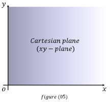
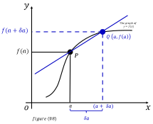

- \(y\ =\ f( x)\) ශ්රිතය (function) සලකමු.
- \(x\) යනු ස්වායක්ත විචල්යය වේ.
- \(y\) යනු පරායත්ත විචල්යය වේ.
(මක්නිසාදයත් \(y\) හි අගය සෑම විටම \(f\) මගින් නිරූපණය කරන කොන්දේසි වලට අනුකූලව \(x\) මත රඳා පවතී.)

- පළමුව අප ප්රස්තාරය \(xy\) තලය මත ඇඳිය යුතුය.
(මෙම තලයට කාටීසියානු තලය ලෙස ගණිතයේදී කියනු ලබයි)
\(x\) - අක්ෂයෙන් \(x\) අගයන් ද, \(y\) - අක්ෂයෙන් \(f( x)\) අගයන් ද නිරූපණය කරයි.
\(x\) - අක්ෂයෙන් \(x\) අගයන් ද, \(y\) - අක්ෂයෙන් \(f( x)\) අගයන් ද නිරූපණය කරයි.
- \(x\) ට එදිරිව \(f(x)\) ශ්රිතයේ ප්රස්තාරය අඳිමු.
අපගේ ප්රස්තාරය මෙම රූපයේ ආකාරයේ ලෙස යැයි සිතමු.
- ප්රස්තාරයේ කිසියම් ලක්ෂ්යයකදී අනුක්රමණය (බෑවුම) සෙවීම සඳහා සුදුසු ලක්ෂ්යයක් තෝරා ගනිමු.
ප්රස්තාරයක අනුක්රමණය යනු \(x\) ට \(y\) අනුපාතයයි.
එනම් \(y/x\) යනු අනුක්රමණය ලෙස සරලව දැක්විය හැක.

- මෙම රූපයේ ආකාරයට ප්රස්තාරය මත වූ \(Q\) නම් තවත් ලක්ෂ්යයක් තෝරාගෙන \(P\) හා \(Q\) ලක්ෂ්ය හරහා යන සරල රේඛාවලක් අඳිමු.
- ඉන්පසු, එම සරල රේඛාවේ අනුක්රමණය් (බෑවුම) සොයනු ලබයි.
අනුක්රමණය \(= \delta y/\delta x\)
(\(\delta\) මගින් ඉතා කුඩා අගයක් නිරූපණය කරයි)
(\(\delta\) මගින් ඉතා කුඩා අගයක් නිරූපණය කරයි)
අනුක්රමණය \((slope)\) = (\(y\) අගයන්ගේ වෙනස) \(\div\) (\(x\) අගයන්ගේ වෙනස)
අනුක්රමණය = \(\frac{f( a\ +\ \delta a) \ -\ f( a)}{\ ( a\ +\ \delta a) \ -\ a}\)
අනුක්රමණය = \(\frac{f( a\ +\ \delta a) \ -\ f( a)}{\delta a}\)
- දැන් \(a\) වෙනුවට \(x\) ආදේශ කළ හැක. මන්ද \(a\) යන්න \(x\) අක්ෂය මත වූ ඕනෑම අගයක් වේ.
අනුක්රමණය = \(\frac{\delta y}{\delta x} \ =\frac{f( x\ +\ \delta x) \ -\ f( x)}{\delta x}\)
- ඉන්පසු අප දෙපසෙහිම සීමාව \(\delta x\) අගය \(0\) ට ආසන්න වන විට සොයනු ලබයි.
$$\lim\limits _{\delta x\rightarrow 0} \frac{\delta y}{\delta x} \ =\lim\limits _{\delta x\rightarrow 0}\frac{f( x\ +\ \delta x) \ -\ f( x)}{\delta x}$$
- මෙය \(L\) ට සමාන යැයි ගනිමු.
$$\lim\limits _{\delta x\rightarrow 0}\frac{\delta y}{\delta x} \ =L$$
මෙහිදී, \(\lim\limits _{\delta x\rightarrow 0}\frac{\delta y}{\delta x} \) ට \(x\) ලක්ෂ්යයේදී \(f(x)\) ශ්රිතයේ ව්යුත්පන්නය යැයි කියනු ලබන අතර එය ගණිතයේදී පහත ලෙස නිරූපණය කරයි.
$$\frac{dy}{dx}$$
- ශ්රිතයක ව්යුත්පනනය සෙවීමට අවකලනය ලෙස අර්ථ දක්වයි.
\(P\) ලක්ෂ්යයේදී ශ්රිතයේ බෑවුමට, එම ලක්ෂ්යයේදී ශ්රිතයේ ව්යුත්පණ්නය ලෙස හඳුන්වනු ලැබේ. එනම් එය \(dy/ dx\) වේ.
• එබැවින් අවකලනය ප්රායෝගිකව භාවිත වන්නේ කිසියම් ප්රස්තාරයක අනුක්රමණයක් සොයන විට වේ. එනම් යම් දෙයක් සිදුවන සීඝ්රතාවක් සෙවීමට මෙම ගණිත කර්මය භාවිත වේ. නිදසුන් ලෙස විද්යුතය ගලා යෑමේ සීඝ්රතාව නිර්ණය කිරීමට, ජන ගහණ වර්ධන වේගය නිර්ණය කිරීම හා රෝගයක් පැතිරීම නිර්ණය කිරීම වැනි අවස්තා සඳහා විවිධ ක්ෂේත්ර වලදී ප්රායෝගිකව භාවිතා කරයි.